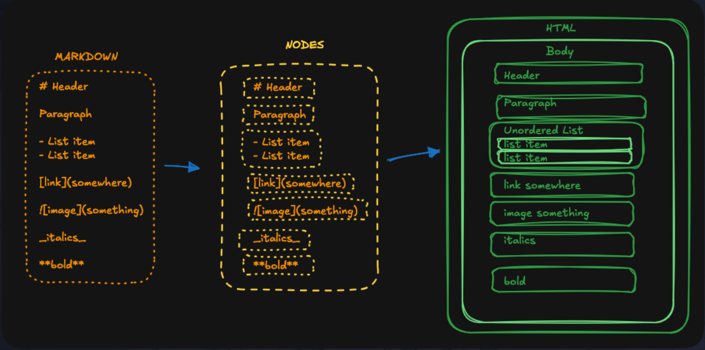

Hey, I'm Faizan!
Welcome to my weird little static site. This whole thing is built with my own Python SSG (static site generator). You’re looking at a page that was generated from markdown, using my own code. Check out my GitHub if you want to see more of my stuff.
---
So what is this? Basically, I wrote a Python script that takes markdown files (like this one), turns them into HTML using a bunch of classes (nodes and stuff), and spits out a website. It copies over images and CSS too, so it looks half-decent.
---
How do you build it?
Just run my main.sh or build.sh scripts.
They clean up the old build, run the generator, and copy everything to the right place.
Then you can serve it with Python or push it to GitHub Pages.
---
What did I learn?
- How to walk through folders and files in Python
- How to use OOP to make a tree of nodes (like HTMLNode, ParentNode, LeafNode)
- How to turn markdown into nodes, and then into HTML
- How to deal with all the annoying little details (paths, links, images, etc)
- That static site generators are actually pretty fun to make
---
What are the limitations?
- No fancy code blocks (so no triple backticks, sorry)
- Only basic markdown: headings, paragraphs, bold, italic, inline code, links, images, lists
- No tables, no HTML passthrough, no nested lists, no escaping
- If you mess up your markdown, it might just crash
- The code is messy, but hey, it works
---
Here's a picture of the architecture (fancy, right?):

And here's how markdown gets turned into nodes and then into HTML:

---
Anyway, thanks for stopping by. If you want to make your own, fork my repo and go wild. It's all on GitHub.
---
See ya!